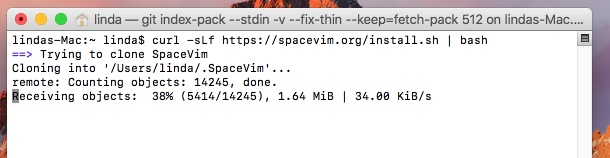
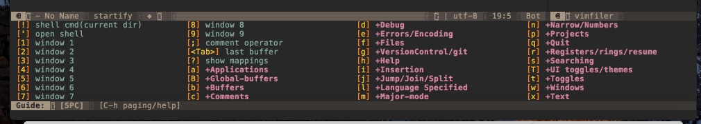
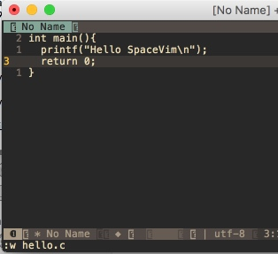
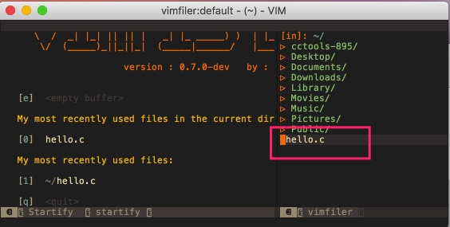
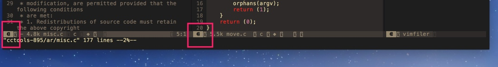
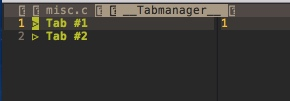
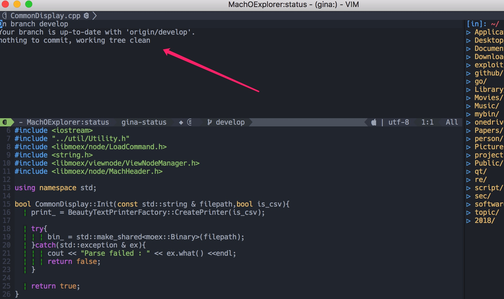
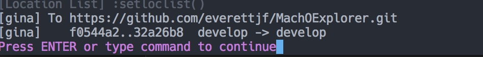

前言
SpaceVim 是作者受 spacemacs 启发而开发的一套 VIM 配置，对新手来说，与其他 vim 配置的重要不同是“存在快捷键提示”，因此上手十分容易，使用时也减轻了大脑的负担。
这篇教程
- 假设用户已经具备 vim 的基本编辑能力。
- 这篇教程目前仅面向 macOS 平台。
- 教程每个章节会尽量简单，轻松阅读。
让我们开始吧！
安装
这篇教程假设是在一个全新的 macOS 系统下进行安装，因此读者可以根据情况跳过某个章节。
安装Command Line Developer Tools
如果你安装了Xcode并打开使用过，或者你很明白git、curl这些命令行工具已经安装了，那可以跳过这一步。
如果没有安装过，那可以打开Terminal.app 然后输入git回车，系统检测到没有安装Command Line Developer Tools，会提示安装，如下图：
点击Install，然后Agree就可以了。
安装MacVim
安装的方式有很多，这次我们使用Homebrew来安装。
先安装Homebrew，打开Terminal.app，输入：
/usr/bin/ruby -e "$(curl -fsSL https://raw.githubusercontent.com/Homebrew/install/master/install)"
回车后，会提示输入密码，输入密码后，等待安装完成。
然后，安装MacVim。
brew install macvim
brew linkapps
（每行表示一次回车）
安装完成后，可以在LaunchPad看到MacVim了。

清理当前vim配置
打开Terminal.app
rm -rf ~/.vim
rm ~/.vim*
安装SpaceVim
打开Terminal.app
curl -sLf https://spacevim.org/install.sh | bash

完成后运行MacVim.app
首次打开会提示选择一个模式，按键盘”1“选择第一个模式。然后，VIM会安装很多插件，等待安装完成。我这等了16分钟（986秒）安装完成。
好了，退出MacVim，再次打开（再次打开可能有一些VIM插件更新），这次会更新插件，等待更新完成。（有些插件可能更新失败，目前先忽略，不影响当前教程的内容，如果需要的时候再去解决）

好了，完成。

命令行
现在如果在Terminal.app中输入vim的话，仍然会打开系统的vim（版本较低）。输入以下命令即可在命令行使用MacVim的Terminal模式。
cd ~;echo "alias vim=\"mvim -v\"" >> .bash_profile; source .bash_profile
字体配置
如果仔细看，可能会发现安装后有些显示问号（？）的地方，这是因为还需要配置一些字体。
这里字体我们使用 https://github.com/ryanoasis/nerd-fonts
可以这样安装：
brew tap caskroom/fonts
brew cask install font-hack-nerd-font
对于MacVim，安装后在配置文件中加入：
let g:spacevim_guifont='Knack\ Nerd\ Font:h12'
Terminal.app需要单独配置字体：
iTerm2.app也需要单独配置字体：

基本使用
之所以叫 SpaceVim，就是因为很多快捷键是空格键<space>作为快捷键前缀。
感受空格键
打开MacVim，按下空格键，1秒后下方会出现一个提示窗口。

如果要关闭这个窗口，可以按ESC。
现在试试输入空格键 字母f 字母t（以后简称 SPC f t），可以关闭右侧的文件浏览器，再次输入SPC f t可以再打开。
备注：上面的截图中存在？的问题，是制作此教程时，没有配置字体的原因。如果安装后配置了字体，不会存在显示？的情况。配置字体请见“安装->字体配置"。
开始输入

打开MacVim（以后简称vim）后，有两个提示选项e和q。按下e会打开一个空的编辑器，按下q则退出vim。
现在输入e，然后输入一段程序：
int main(){
printf("Hello SpaceVim\n");
return 0;
}
输入:w hello.c保存。

打开文件
重新打开vim，如果此时我们想打开一个文件，例如打开HOME目录下的hello.c文件，输入:e hello.c。（这都是vim基本的使用方式）
打开后如图：
文件浏览器
现在再回到右侧的文件浏览器上，试试按下<F3>也可以打开关闭。也就是 <F3> 或者 SPC f t都可以打开关闭文件浏览器。
打开文件浏览器后，光标会进入文件浏览器中，这时可以输入j、k上下移动，h和l可以打开关闭文件夹。
例如下图：按j移动到hello.c后，按回车或字母l都可以打开hello.c文件。

缓冲区管理
vim中打开的每个文件都可称为一个缓冲区（buffer），如果我们打开了多个文件，可以SPC b b显示列表：
此时可以输入文件名过滤，例如输入append，然后回车，可以切换到append.c的文件。
此外，这个节目还可以通过ctrl+n或ctrl+p来上下移动选择文件。
如果要当前缓冲区，可以使用SPC b d。
窗口管理
输入SPC w /可在右侧分割窗口，输入SPC w -可在下方分割窗口。分隔完窗口后，光标会落到文件浏览器，此时可以通过文件浏览器选择某个文件打开文件。在选中文件回车后，会提示将文件放入哪个窗口中。如下图：
 此时输入
此时输入a（不需要大写），就可以把文件放入A窗口。
有了多个窗口，那如何切换呢？仔细看可以注意到窗口左下角有编号，

如果要切换到窗口1，则输入SPC 1即可切换过去。切换到窗口2则输入SPC 2，以此类推。这点可以说是相当方便了。
还可以使用SPC w TAB（TAB表示Tab键）顺序切换窗口。
Tab管理
打开的文件多了，还可以使用Tab。现在输入SPC w F（注意是大写F），可以新建一个Tab页面。然后输入SPC t t显示Tab列表：

在Tab中可以上下选择（j、k移动光标）然后回车切换。
也可以使用SPC w o顺序切换Tab。
总结
SpaceVim中的快捷键都容易记忆，窗口（window）就是w，文件（file）就是f，缓冲区（buffer）就是b，Tab管理就是t。再加上按SPC键后，每个功能都有字母提示，几乎不用再去找某个功能的文档。
简单配置
SpaceVim 提供了我们可以自定义配置的文件，就是~/.SpaceVim.d/init.toml文件，
所有自定义的内容都可以放到这个文件中。这个文件夹也就可以通过 git 管理起来。
以下配置可参考我的配置文件
空格键延迟
默认按下空格键是 1 秒后显示选项，由于刚刚上手，可以设置的短一些，例如 200 毫秒
set timeoutlen=200
换个主题
所有支持的主题: 主题模块
[options]
colorscheme = "onedark"
语言支持
有些语言我用不到，注释掉吧。（这里根据个人情况来，我主要是用 vim 来写 Python 和 Go）

字体配置
如果仔细看，可能会发现安装后有些显示问号（？）的地方，这是因为还需要配置一些字体。
这里字体我们使用 https://github.com/ryanoasis/nerd-fonts
可以这样安装：
brew tap caskroom/fonts
brew cask install font-hack-nerd-font
对于 MacVim，安装后在配置文件中加入：
[options]
guifont='Knack Nerd Font:h12'
Terminal.app 需要单独配置字体：

iTerm2.app 也需要单独配置字体：

总结
然后，就 MacVim 像我这样啦。

空格键延迟
默认按下空格键是1秒后显示选项，由于刚刚上手，可以设置的短一些，例如200毫秒
set timeoutlen=200
换个主题
所有支持的主题 https://github.com/rafi/awesome-vim-colorschemes
let g:spacevim_colorscheme = 'onedark'
语言支持
有些语言我用不到，注释掉吧。（这里根据个人情况来，我主要是用vim来写Python和Go）
字体配置
这个章节已经移动到了安装部分。
总结
然后，就MacVim像我这样啦。

工程管理
工程的定义：
SpaceVim会从当前文件自动向上查找.git目录或者.projections.json文件的目录作为根目录。
输入SPC p可以看到支持的功能。

模糊查找
最常用的功能就是模糊查找了，SPC p /输入任意字符串后回车

在这个窗口中可以按jk上下选择，可以按q退出。
git使用
SPC g s 查看状态

SPC g A 添加所有文件
SPC g S 添加当前文件
SPC g c 设置commit message，最后 :wq 表示完成并commit
SPC g p 开始push
成功后会有提示： 
初步进阶
玩点相对“高级”的。
命令行
SPC ! 然后输入 ls，最后 :q 退出
Terminal
:terminal
Python开发环境
安装jedi后可支持自动补全。
pip install jedi
与pyenv配合
假设已经安装了 pyenv 和 Oh my zsh，
- .bash_profile
- .zprofile
在以上两个文件中加入：export PATH="$HOME/.pyenv/shims:$PATH"。
小知识
一些简单的使用或配置方法，都是我日常开发中使用的。
相对行号
SpaceVim默认使用了相对行号，我不习惯：
" Relative line number
let g:spacevim_relativenumber = 0
把这行加入~/.SpaceVim.d/init.vim中，就好了。
注释
<SPC> c l 注释选择的行。一般我会V然后选择多行，然后按<SPC> c l注释掉选择的行。取消注释也是这样。c l就是comment lines的意思。
当然按下<SPC> c后会有很多选择，我是感觉记不住也很少用哈。

补充
如果觉得SPC c l稍微麻烦（不同字母嘛），添加下面的代码到init.vim。
call SpaceVim#custom#SPC('nmap', ['c', 'c'], '<Plug>NERDCommenterInvert', 'comment or uncomment lines', 0)
就可以使用SPC c c作为注释快捷键了。
当然相同字母可能就 hurt your fingers。
录制宏
SpaceVim的录制宏操作，修改了vim的默认快捷键。个人感觉不太好，但或许大佬们有自己的理由。
但习惯了也就没什么问题了。
Normal mode 下按下\ q r 开始或结束录制。
TagBar
需要先安装ctags，macOS下可以如下安装：
brew install ctags
安装后可以如下看下是否安装成功：
[everettjf@e ~ ]$ ctags --version
Exuberant Ctags 5.8, Copyright (C) 1996-2009 Darren Hiebert
Compiled: Sep 17 2017, 20:48:43
Addresses: <dhiebert@users.sourceforge.net>, http://ctags.sourceforge.net
Optional compiled features: +wildcards, +regex
然后打开一个cpp文件（或者其他源代码文件），按F2就可以在左侧看到TagBar啦。

可以SPC 1移动到TagBar的窗口，选择后回车就可以跳转到对应的函数（方法）。
设置文件语法类型
作为一名主页iOS开发，打开Objective-C源文件(*.m)时，SpaceVim会识别为matlab文件，添加如下代码可以修复过来：
" Set .m file type default to objc
autocmd BufEnter *.m setlocal ft=objc

grep当前文件（缓冲区）
SPC s s 可以在当前打开的文件（缓冲区）执行grep搜索。
例如下图grep brew四个字符。
输入完成brew后，可以按esc，然后就可以按jk来上下选择，在想定位的一行回车，就可以直接到目的行。如果不想回车，可以按q退出。

下一步
- 阅读一遍文档 http://spacevim.org/documentation/ 。
- 加入QQ群 121056965 或 Gitter，和大家交流。